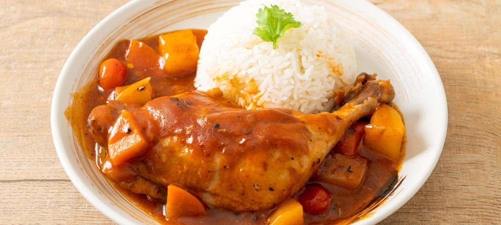

Pollo Estofado (Chicken Stew from Peru)

Indulge in the heartwarming flavors of Peru with Estofado De Pollo, a mouthwatering chicken stew that has captured the hearts of many. This traditional Peruvian dish features succulent chicken, vibrant vegetables, and the unique ají panca chili pepper, creating a symphony of flavors that will leave you craving more. Get ready to savor the harmonious flavors and experience the true essence of Peruvian cuisine with Estofado De Pollo.
In this recipe, you'll learn how to prepare a delicious Estofado De Pollo in your own kitchen. With simple ingredients and easy-to-follow directions, you'll be able to recreate this beloved Peruvian specialty. So gather your ingredients and let's dive into the delightful world of Estofado De Pollo. Get ready to savor every spoonful of this hearty and comforting Peruvian chicken stew.
Ingredients
- 4 chicken pieces (bone-in)
- 2 medium carrots, sliced
- 3.5 ounces of peas
- 3 medium baking potatoes, peeled and cut into 8 pieces
- 1 Russet potato, peeled and cut into 8 pieces
- 9 ounces of uncooked rice
- 2 cloves of garlic, finely chopped
- 1 red onion, diced
- 3 medium tomatoes, finely chopped
- 2 cups of chicken stock
- ¼ cup of vegetable oil
- 2 tablespoons of ground ají panca chili pepper
- 3 cilantro stems
- Salt, pepper, and cumin to taste
Directions
- Place the rice in a pot or electric rice cooker, adding a teaspoon of salt, and boil until cooked.
- Heat the vegetable oil in a pot and lightly fry the chicken pieces for a few minutes until they are sealed but not fully cooked inside. Remove from the pot and set aside.
- In the same oil, fry the onion, tomato, garlic, and ground ají panca chili pepper.
- Add salt, pepper, and cumin to taste.
- Add the carrot slices, chicken pieces, chicken stock, potatoes, peas, and cilantro stem to the pot. Cook for approximately 25 minutes.
- Serve with a generous portion of rice and garnish with chopped cilantro.
Return to main page